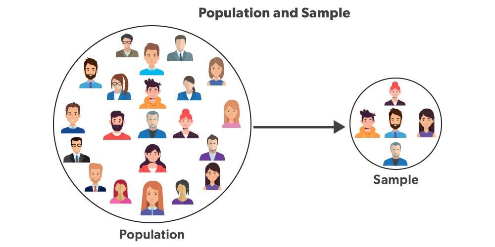

A population is the entire group you are interested in studying. It includes every individual, item, or observation that fits your definition.
Examples of populations:
Population parameters are numerical values that describe the population, such as the true mean height of all UK adults or the true proportion of households with broadband internet.
A sample is a smaller group selected from the population. We study the sample because analysing an entire population is usually impossible, expensive, or time‑consuming.
Why we use samples:
Sample statistics are numerical values calculated from the sample, such as the sample mean or sample proportion. We use these to make inferences about the population.

Image Source: GeeksforGeeks — Population and Sample Statistics
A simple way to think about the relationship:
Population → Sampling → Sample → Analysis → Conclusions about Population
A variable is any characteristic that can be measured or recorded for each observation in a dataset.
Types of variables:
Examples of variables in a dataset:
In most datasets, each row represents an observation (one individual or item), and each column represents a variable.
For example:
| Student | Age | Height | Course | Satisfaction |
|---|---|---|---|---|
| A | 19 | 174 | Actuarial Science | Good |
| B | 20 | 181 | Economics | Excellent |
| C | 19 | 168 | Mathematics | Average |
3 observations → the three students
4 variables → Age, Height, Course, Satisfaction